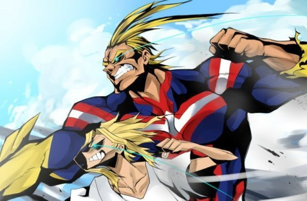

Toshinori Yagi (八や木ぎ俊とし典のり Yagi Toshinori?), mais conhecido pelo seu nome de herói, All Might (オールマイト Ōrumaito?), é o deuteragonista de My Hero Academia. All Might é o antigo Pro Hero No. 1 que teve o título de Símbolo da Paz. Ele ensina Estudos Fundamentais dos Heróis na U.A. High.
Toshinori foi o oitavo usuário da individualidade One For All e recebeu esta de Nana Shimura. Ele já passou a tocha para Izuku Midoriya, a quem ele está preparando para ser seu sucessor. Após sua luta contra o All For One ele perde todo o resto de poder que ainda tinha. All Might se aposentou da luta contra o crime e, encerrou sua era como o maior herói do mundo.